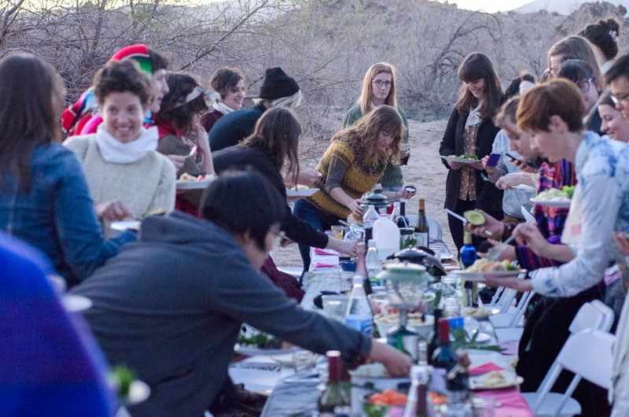

Kate Johnstonis a Los Angeles-based graphic designer and co-founder of
the Women's Center for Creative Work, which is an organization whose mission is to cultivate LA’s feminist creative communities and practices. She studied classics and
graduated from CalArts in 2012 with an MFA in graphic design.The WCCW is a safe space where: "self-determination, respect and care for oneself and others is maintained above all else; we care for and respect the organization, its capacity, its facility and its participants; there is a radically expansive and intersectional understanding of feminism, what is a woman and what is female experience; there is a radically expansive understanding of creative practice; cis women, trans women, femme and non-binary folks are in a place of preference, unqualified and unapologetically; we cultivate a spirit of generosity and joy; We honor our ever-expanding network as a valuable resource; we advocate for feminism as an active and evolving practice."
Promotional materials for the WCCW by Kate Johnston.


What inspired you to start the Women’s Center for Creative Work? What was involved in that process?
I didn’t mean to start an organization exactly. In 2013 two collaborators and I (Sarah Williams, now WCCW co-director, and an artist named Katie Bachler, who has since moved to the East Coast) were throwing site specific feminist dinner parties in the middle of fields around the LA area. I made up the name “Women’s Center for Creative Work” to go on the return address for the invites we sent out. I liked the idea of a party invite coming from something that sounded vaguely bureaucratic. The audience from those parties became very activated and propelled us to create an organization. Since day one we have been in service of our audience and our community.
Images from the Women's Dinner in the Desert, March 2012

Has your mission for the WCCW changed since it
started?
Our mission is to enable the feminist projects and practices of Los Angeles. The mission has not changed since we developed it in conjunction with becoming a not for profit org, but the methods as to how we go about fulfilling it changes constantly. We are a very nimble organization. Sometimes we get an email with feedback and it causes us to re-structure our whole programming protocol.


I understand the WCCW has a new brick and mortar location. What was the process like of solidifying that space?
When we moved in two years ago we only had enough money to pay 2 months of rent. We had to beg all our friends to buy memberships. Sarah and I were both working full time other jobs and painting and ripping up tile and running programs. The cops kept coming because we were having lots of parties with live music, Officer Gina and her partner. We learned a lot about the capacities of ourselves and our space really quickly. It was so hard. I actually don’t know how Sarah and I got through it, I think we have both blocked it out. Two years later we are so fortunate to have over 300 members as well as some generous funders. We have a staff now, and we no longer have live music past 11pm. Officer Gina is now our buddy!
Renovating the new location of the WCCW in Frogtown,
Los Angeles, 2016

What surprised you, or what did you learn, through this process of coalition and community building?
I learn every day, and learning is always a process. All the processes are connected, like learning how to unpack my privilege and not take up too much space as a cisgendered white woman, or learning how to be a good manager and mentor to the WCCW staff. I talk to people and read and and write things down so I can spend time unpacking them. This morning in a meeting someone said “Ruthless Compassion.” I wrote it down and am going to think about it for a second.
Who is your hero—and do you have just one? Who are your most meaningful heroes?
I am in awe of so many people for so many reasons. My grandmother is one of them. She is Scandinavian and can be very mean, but it’s because she believes there is a certain way to do things. She cares very deeply about manners as a structure to make people comfortable. She talks about how important it is to “draw someone out” if you have just met them, find out what their interests are and engage with them. She is 92 and still is the most lively person at every party, always the last to leave.
What is your approach to your design practice, and what are your most critical habits?
My design practice is one of service. I put myself in the service of things I care about and want to enable. Sometimes those things are necessary human rights, like feminism, and sometimes they are quotidian, like paying the rent. All are equally valid. You can’t dismantle the patriarchy very well if you have to live in your car.
What are your latest obsessions?
I endeavour not to obsess over anything.
Do you have any collections of things? What do you collect?
I collect many things on a day to day basis; paper ephemera, books and articles I mean to read, rocks and sticks, pottery and jars, plastics, packaging. I get little piles and compositions going all around my office, then I periodically give/throw it all away and start again.
What are some major themes in your work? What do you return to as a common thread?
Comfort is very important to me. In this case I mean the level at which the audience of any given piece of design understands what is being communicated to them and what they should do about it. If the audience is uncomfortable the message will not come across. (Unless, of course, the message means to make the audience uncomfortable.) Design is a vessel. It needs to be thoughtfully built to serve the content going through it. I think of it more as a sturdy cardboard box than a crystal goblet, though. Cardboard boxes are amazing. They are honest and utilitarian. They serve their content. They can be reused for different things. I know a typeface rules when I can use it for everything.
I care very much about production as well. Today, there are so many different ways to use media to solve a given design problem that it is of paramount importance that any piece of design must be defined at its conception by its unique set of production restrictions; audience, timeline, budget, etc. Beginning any project with an understanding of its ultimate production is understanding how it will be born from an idea to a piece of graphic design in the world which communicates content to an audience.
How did you know you wanted to be a graphic designer?
I came of age in the 1990’s making zines about my feelings, friends and favorite bands. Zines were the ultimate design gateway: they required information to be organized according to a system, production know-how, and, most importantly, a deep wish to connect with an audience through a shared frame of reference. You make a zine when you have something you want to say and that you want other people to hear. Back in those days we would communicate by putting our mailing addresses on the back of zines; people would mail stuff to each other –collages, poems, mixed tapes. The sense of community was propelled by the stuff we made.
Please describe your feminist utopia (as of late).
I am weary of the word utopia, which means, literally, “no-place,” as in, place that cannot be. I want a future in which there is universal health care, reproductive rights for all bodies, marriage equality, and empathetic immigration policy. These are dark times in the US, but I still need to envision that these are things that will be, some day.
What must you have with you at all times while you work?
A clear idea of what needs to be done; what are the constraints, and who is the audience. A comfortable chair doesn’t hurt either.
What is next for the WCCW?
We just launched our residency program at the Huntington for the rest of 2017. For summer we are doing a summer skill share with skill-based free programming for our community. We are working on a book that will be an exportable model of the WCCW so that people can see how we do things and hopefully use it as a springboard to start their own feminist spaces in their own communities. We are working on our website to make it more accessible. We finally got the money to finish our floors, since for the last two years they have been unfinished concrete. In the fall we are going to announce a new programming structure and some exciting new initiatives!
What is your favorite part about Los Angeles?
Los Angeles is my favorite place in the world because it is 1000’s of different places. This means it’s impossible to talk about the whole city at once. I live and work in Northeast LA, which has mild traffic and great tacos and necessarily difficult conversations about gentrification. There are lots of weedy yards to hang out in and shows to go to. It’s not quite common to run into someone you know on the street. To me, it feels very un-self conscious; everyone has their own thing going on. People like give each other a lot of space.
What is your proudest accomplishment?
I’m proud that at 37 years on this planet I am getting better and better at listening, which makes me a better designer, collaborator, partner and friend.